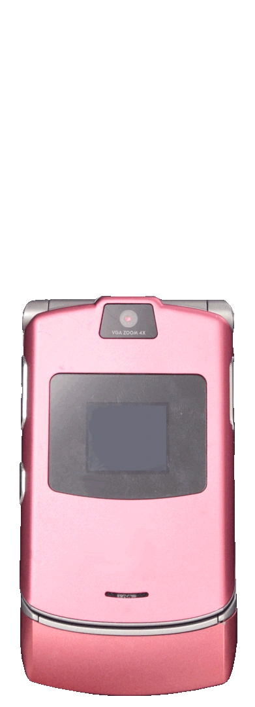

homepage thing
link things
Main site
Web retro (emulator)
Ruffle (flash emulator)
Emulator files (wip)
​
homepage feedback/suggestions
The Wall
This is where site updates and news will be shown
homepage reformat 11/13/24
